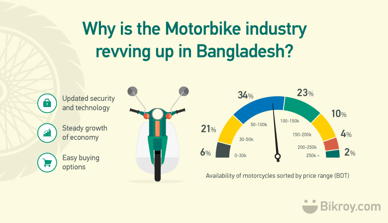
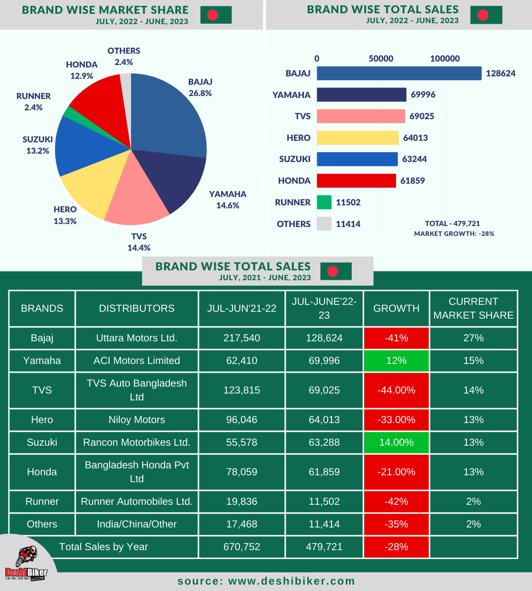

The biking industry is experiencing a vibrant transformation, fueled by a surge in cycling popularity for both recreation and commuting. E-bikes are particularly gaining traction, offering a convenient option for those looking to cover longer distances or tackle hilly terrain. Sustainability is also at the forefront, with manufacturers increasingly focusing on eco-friendly materials and practices. Additionally,urban infrastructure improvements, like dedicated bike lanes and bike-sharing programs, are encouraging more people to choose cycling as a viable mode of transportation. Overall,the industry is not just about selling bikes; it's about fostering a culture of health, sustainability, and community.
Feel free to explore the content provided on this website.
You may not find any recent brand wise market share data on the internet. This is quite difficult for a media/agency/individuals to collect data from different sources. However, finally Deshi Biker became capable to reveal the current market share and sales volume of motorcycles brand in Bangladesh. To collect this data from authentic sources, Deshi Biker editors were contacted with multiple companies and industry experts. Hopefully, this content, data & the infographic will be much more helpful for this industry peoples, journalists and motorcycle enthusiasts. Don’t forget to mention the source deshibiker.com during share on the internet. In the financial year 2021-22, a total 670,752 motorcycles were sold in Bangladesh. Industry growth became minus figure (- 28.5%) last year. All motorcycle companies sell a total 479,721 motorcycles in 2022-23 (July – June). Every individual brand loses the market share except Yamaha & Suzuki. Bajaj is still dominating the motorcycle market with 27% share but it was more than 40% few years back. They are the market leader in 125cc segment with 49.29% share. Currently, Discover 125 is the most selling model of this Indian two wheeler brand. Uttara motors ltd. was sold 128,624 units in the last fiscal year. Yamahas growth rate was 12% in the last year, though the total market sales was 28% down compared with the previous year. Yamaha and Suzuki are the only companies whose sales volume increased in the last fiscal year. Yamaha is currently in 2nd position with 15% share. ACI motors Ltd. sold 65,645 motorcycles in 150 – 165cc segment. Yamaha FZs V2 DD and Yamaha FZs V3 are their most selling models.
